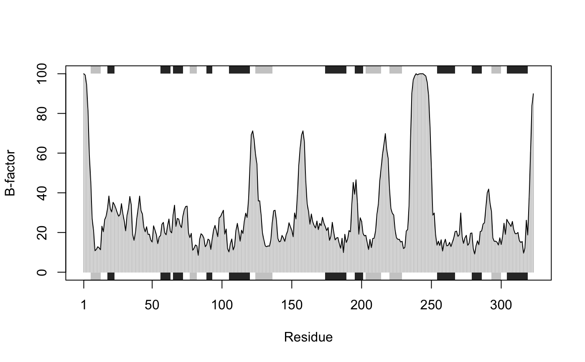
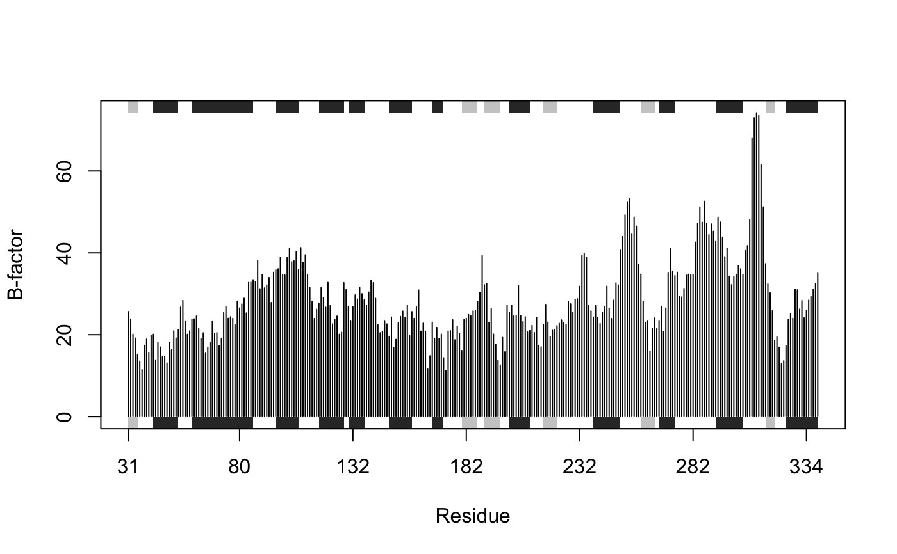

plot.bio3d.RdDraw a standard scatter plot with optional secondary structure in the marginal regions.
plotb3(x, resno = NULL, rm.gaps = FALSE, type = "h", main = "", sub = "", xlim = NULL, ylim = NULL, ylim2zero = TRUE, xlab = "Residue", ylab = NULL, axes = TRUE, ann = par("ann"), col = par("col"), sse = NULL, sse.type="classic", sse.min.length=5, top = TRUE, bot = TRUE, helix.col = "gray20", sheet.col = "gray80", sse.border = FALSE, ...) # S3 method for bio3d plot(...)
| x | a numeric vector of values to be plotted. Any reasonable way of defining these plot coordinates is acceptable. See the function ‘xy.coords’ for details. |
|---|---|
| resno | an optional vector with length equal to that of ‘x’ that will be used to annotate the xaxis. This is typically a vector of residue numbers. If NULL residue positions from 1 to the length of ‘x’ will be used. See examples below. |
| rm.gaps | logical, if TRUE gaps in |
| type | one-character string giving the type of plot desired. The following values are possible, (for details, see ‘plot’): ‘p’ for points, ‘l’ for lines, ‘o’ for over-plotted points and lines, ‘b’, ‘c’) for points joined by lines, ‘s’ and ‘S’ for stair steps and ‘h’ for histogram-like vertical lines. Finally, ‘n’ does not produce any points or lines. |
| main | a main title for the plot, see also ‘title’. |
| sub | a sub-title for the plot. |
| xlim | the x limits (x1,x2) of the plot. Note that x1 > x2 is allowed and leads to a reversed axis. |
| ylim | the y limits of the plot. |
| ylim2zero | logical, if TRUE the y-limits are forced to start at zero. |
| xlab | a label for the x axis, defaults to a description of ‘x’. |
| ylab | a label for the y axis, defaults to a description of ‘y’. |
| axes | a logical value indicating whether both axes should be drawn on the plot. Use graphical parameter ‘xaxt’ or ‘yaxt’ to suppress just one of the axes. |
| ann | a logical value indicating whether the default annotation (title and x and y axis labels) should appear on the plot. |
| col | The colors for lines and points. Multiple colors can be specified so that each point is given its own color. If there are fewer colors than points they are recycled in the standard fashion. Lines are plotted in the first color specified. |
| sse | secondary structure object as returned from
|
| sse.type | single element character vector that determines the type of secondary structure annotation drawn. The following values are possible, ‘classic’ and ‘fancy’. See details and examples below. |
| sse.min.length | a single numeric value giving the length below which secondary structure elements will not be drawn. This is useful for the exclusion of short helix and strand regions that can often crowd these forms of plots. |
| top | logical, if TRUE rectangles for each sse are drawn towards the top of the plotting region. |
| bot | logical, if TRUE rectangles for each sse are drawn towards the bottom of the plotting region. |
| helix.col | The colors for rectangles representing alpha helices. |
| sheet.col | The colors for rectangles representing beta strands. |
| sse.border | The border color for all sse rectangles. |
| ... | other graphical parameters. |
This function is useful for plotting per-residue numeric vectors for a given protein structure (e.g. results from RMSF, PCA, NMA etc.) along with a schematic representation of major secondary structure elements.
Two forms of secondary structure annotation are available: so called ‘classic’ and ‘fancy’. The former draws marginal rectangles and has been available within Bio3D from version 0.1. The later draws more ‘fancy’ (and distracting) 3D like helices and arrowed strands.
See the functions ‘plot.default’, dssp and stride
for further details.
Called for its effect.
Grant, B.J. et al. (2006) Bioinformatics 22, 2695--2696.
Barry Grant
Be sure to check the correspondence of your ‘sse’ object with the ‘x’ values being plotted as no internal checks are performed.
plot.default, dssp, stride
# \donttest{ # PDB server connection required - testing excluded ## Plot of B-factor values along with secondary structure from PDB pdb <- read.pdb( "1bg2" )#> Note: Accessing on-line PDB file#> Warning: /var/folders/xf/qznxnpf91vb1wm4xwgnbt0xr0000gn/T//Rtmp4WslmZ/1bg2.pdb exists. Skipping downloadbfac <- pdb$atom[pdb$calpha,"b"] plot.bio3d(bfac, sse=pdb, ylab="B-factor", col="gray")# } if (FALSE) { ## Use PDB residue numbers and include short secondary structure elements plot.bio3d(pdb$atom[pdb$calpha,"b"], sse=pdb, resno=pdb, ylab="B-factor", typ="l", lwd=1.5, col="blue", sse.min.length=0) ## Calculate secondary structure using stride() or dssp() #sse <- stride(pdb) sse <- dssp(pdb) ## Plot of B-factor values along with calculated secondary structure plot.bio3d(pdb$atom[pdb$calpha,"b"], sse=sse, ylab="B-factor", typ="l", col="blue", lwd=2) } # \donttest{ # PDB server connection required - testing excluded ## Plot 'aligned' data respecting gap positions attach(transducin) pdb = read.pdb("1tnd") ## Reference PDB see: pdbs$id[1]#> Note: Accessing on-line PDB file#> Warning: /var/folders/xf/qznxnpf91vb1wm4xwgnbt0xr0000gn/T//Rtmp4WslmZ/1tnd.pdb exists. Skipping downloadpdb = trim.pdb(pdb, inds=atom.select(pdb, chain="A")) ## Plot of B-factor values with gaps plot.bio3d(pdbs$b, resno=pdb, sse=pdb, ylab="B-factor")## Plot of B-factor values after removing all gaps plot.bio3d(pdbs$b, rm.gaps=TRUE, resno = pdb, sse=pdb, ylab="B-factor")detach(transducin) # } ## Fancy secondary structure elements ##plot.bio3d(pdb$atom[pdb$calpha,"b"], sse=pdb, ssetype="fancy") ## Currently not implemented